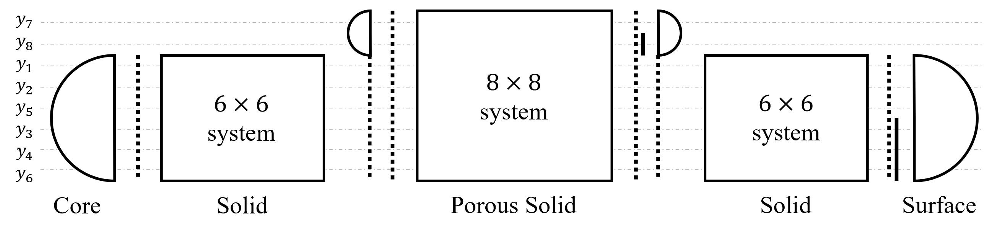

Reference (3)
Solid-Phase - solid1d-mush-relax
For the "solid1d-mush-relax" model we will need to use many of the concepts we saw for the other models. The basic structure is identical to that of "solid1d-relax", but instead of just one motion matrix we will now be working with two motion matrices (i.e. the two $\pmb{A}_n(r)$ listed earlier in the document). In order to grasp what is going on in the system let us draw schematically the structure of the solver.

Note that for symmetry reasons I have reordered the $y$-functions. This way when we embed the $6\times6$ system in the $8\times8$ system we split the lower and upper parts and add one new porous $y$-function to both sets. If we had not done this, then the new grouping would contain 4 old and 2 old + 2 new $y$-functions, instead of 3 old + 1 new and 3 old + 1 new. Within the code we create a transfer matrix array $R$ (length $N$) with size $8 \times 8$, we subsequently expose the $6\times 6$ system as a "view". The specific ording as seen by the two systems is
\[\begin{aligned} \pmb{y}_{n,m} &= (U_{n,m} , V_{n,m} , \Phi_{n,m} , X_{n,m} , Y_{n,m}, \Psi_{n,m})^T & (6\times6) \\ \pmb{y}_{n,m} &= (U_{n,m} , V_{n,m} , \Phi_{n,m} , P_{n,m}, X_{n,m} , Y_{n,m}, \Psi_{n,m}, R_{n,m})^T & (8\times8) \end{aligned}\]
With this clarified, let us have a look at the diagram.
From the left, we start with the core solution boundary
\[ B = \begin{pmatrix} 1 & 0 & 0 & b_{11} & b_{12} & b_{13} \\ 0 & 1 & 0 & b_{21} & b_{22} & b_{23} \\ 0 & 0 & 1 & b_{31} & b_{32} & b_{33} \end{pmatrix},\]
We than impose continuity between $B$ and our modal solution vector, this is denoted by the dotted vertical line.
\[\begin{pmatrix} 1 & & & & & \\ & 1 & & & \\ & & 1 & & \\ & & & 1 & \\ & & & & 1 \\ & & & & & 1 \end{pmatrix}_{(6\times6)} \pmb{y}_{n,m}(r_1^-) = \begin{pmatrix} 1 & & & & & \\ & 1 & & & \\ & & 1 & & \\ & & & 1 & \\ & & & & 1 \\ & & & & & 1 \end{pmatrix}_{(6\times6)} \pmb{y}_{n,m}(r_C^+)\]
We then start constructing $R_n$ throughout the solid layers
\[ \pmb{C}_n \pmb{y}_n + \pmb{D}_{n+1} \pmb{y}_{n+1} = \pmb{0}\]
with $\pmb{A}_n$ the $6 \times 6$ motion matrix, exactly as in Solid-Phase - solid1d-relax. At some point we may encounter a porous layer, where we must couple the $6\times6$ elastic system to the $8\times8$ poro-elastic one that carries the two extra porous $y$-functions (pore pressure $P_{n,m}$ and Darcy flux $R_{n,m}$).
Solid-to-mush and mush-to-solid interfaces
At a transition, the response matrices are still built from the same $\pmb{C}_n, \pmb{D}_{n+1}$ recursion, but now in the padded $8\times8$ space so that both sides of the interface can be expressed in a common $8$-component vector. Two asymmetric adjustments are made to $\pmb C_n$ or $\pmb D_{n+1}$ depending on the direction of the transition, since one side of the interface has no porous degrees of freedom to match against:
- Solid $\to$ mush (entering a porous layer from below): the incoming $3\times6$ "stored" lower half-block from the solid side is scattered into the $8$-slot ordering at the six non-porous column positions (i.e. everywhere except the pore-pressure and Darcy-flux slots), and the pore-pressure row of $\pmb C_n$ is zeroed, since the solid side has no pore pressure to enforce continuity on.
- Mush $\to$ solid (leaving a porous layer from below): both the pore-pressure and Darcy-flux rows of $\pmb D_{n+1}$ are zeroed, since the solid side above has neither degree of freedom.
In both cases a small regularizing term $\pmb K_n$ — a single $1$ placed on the Darcy-flux diagonal entry — is added to $\pmb X_n = \pmb P_n \pmb R_{n-1} + \pmb S_n$ before it is inverted, since dropping a row/column pair can otherwise leave $\pmb X_n$ singular. Because this padding and regularization can leave $\pmb X_n$ ill-conditioned, the response matrix is obtained with the Moore-Penrose pseudo-inverse, $\pmb R_n = -\pmb X_n^{+} \pmb Q_n$, rather than a direct solve. The physical boundary condition actually enforced at the interface — zero Darcy flux crossing it — is then applied directly and unconditionally afterwards, by overwriting the Darcy-flux column (mush $\to$ solid) or row (solid $\to$ mush) of the resulting $\pmb R_n$ with zeros. This guarantees the no-flux condition regardless of what the padded, pseudo-inverted solve produced for that entry.
Once inside the porous layer, we continue constructing $R_n$ using the full $8\times8$ motion matrix,
\[ \pmb{C}_n \pmb{y}_n + \pmb{D}_{n+1} \pmb{y}_{n+1} = \pmb{0}, \qquad \pmb{A}_n \text{ the } 8\times8 \text{ motion matrix},\]
with the same forward/backward Henyey sweep used for the solid segments above, until the mush layer ends (another interface of the opposite kind) or the surface is reached.
A simple practical workaround is to assign a porosity slightly above the percolation threshold (porosity_thresh) everywhere a porous layer is present, so that the solver is built as a single, interface-free $8\times8$ propagator instead of exercising this coupling logic at all.
Function Documentation
Obliqua.run_solid1d_mush_relax — Function
run_solid1d_mush_relax(omega, rho, radius, visc, shear, bulk, bulkd, phi, alpha, perm, R, m_core, ρ_core, μ_core, κ_core; dr_min=300, dr_max=3000, n=2, m=2, core="liquid", inertial_terms=true, visc_l=1e2, bulk_l=1e9, porosity_thresh=1e-5, optimize_scales=false, patch=false)Use 1D solid tides model with relaxation method to calculate kn Lovenumbers, and compute 1D heating profile from strain tensor. This method includes inertia effects, but is more computationally expensive.
Arguments
omega::prec: Forcing frequency range.rho::Array{prec,1}: Density profile of the planet.radius::Array{prec,1}: Radial positions of layers, from core to surface.gravity::Array{prec,1}: Gravity profile of the planet.visc::Array{prec,1}: Viscosity profile of the planet.shear::Array{precc,1}: Complex shear modulus profile of the planet.bulk::Array{precc,1}: Complex bulk modulus profile of the planet.bulkd::Array{precc,1}: Complex drained bulk modulus profile of the planet.phi::Array{prec,1}: Melt fraction (porosity) profile of the planet.alpha::Array{precc,1}: Biot's modulus profile of the planet.perm::Array{prec,1}: Permeability profile of the planet.R::prec: Planet radius.m_core::prec: Core mass.ρ_core::prec: Core density.μ_core::precc: Core shear modulus.κ_core::precc: Core bulk modulus.
Keyword Arguments
dr_min::Int=300: Minimum layer thickness in m.dr_max::Int=3000: Maximum layer thickness in m.n::Int=2: Power of the radial factor (goes with (r/a)^{n}, since r<<a only n=2 contributes significantly).m::Int=2: Harmonic of the true anomaly. m=2 corresponds to the semidiurnal tide, m=1 diurnal tide.core::String="liquid": Core state, either "liquid", "solid", or "inertial".inertial_terms::Bool=true: Whether to include inertial terms in the motion matrix.visc_l::Float64=1e2: Liquid viscosity.bulk_l::Float64=1e9: Liquid bulk modulus.porosity_thresh::Float64=1e-5: Porosity threshold, below this value no mush.optimize_scales::Bool=false: Whether to optimize non-dimensionalization scales.patch::Bool=false: Whether to insert an infinitesimal solid shell around the core. This patches an issue where y2 and y4 become decoupled and cause the solution to diverge in fluid layers.
Returns
power_prf::Array{prec,1}: Heating profile.Eμ_glb_itp::Array{prec,4}: Heating map (colatitude, longitude, radius).Eκ_glb_itp::Array{prec,4}: Heating map (colatitude, longitude, radius).El_glb_itp::Array{prec,4}: Heating map (colatitude, longitude, radius).kn_T::precc: Complex Tidal kn Lovenumber.kn_L::precc: Complex Load kn Lovenumber.